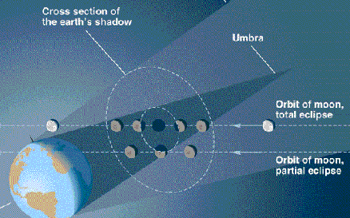
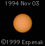
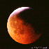
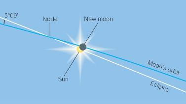
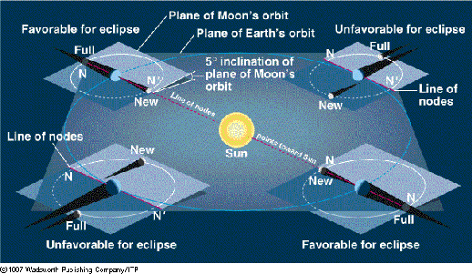

ASTR 1230 (O'Connell) Lecture Supplement
4.2 ECLIPSES

A. ECLIPSES (DARK SHADOWS)
During an eclipse either the Sun or the Moon appears to "go out."
Both can be dramatic events, for properly situated observers on
Earth. In particular, total solar eclipses have tremendous
psychological impact because the Sun disappears with no guarantee of
return. The picture at the top of the page shows a series of
photographs taken before, during, and after a total solar eclipse.
- There are two types of eclipses: lunar and solar.
They are produced by shadows cast by the Earth and the
Moon, respectively.
- A lunar eclipse occurs when the shadow of the Earth
strikes the Moon
- A solar eclipse occurs when the shadow of the Moon
strikes the Earth
- The geometry of the two kinds of eclipses is illustrated in
the following diagrams. (Click for enlargements):

Lunar Eclipse Geometry

Solar Eclipse Geometry
 Click on the button for a video [650 KB] of the
Moon's shadow crossing the Earth during an eclipse.
Click on the button for a video [650 KB] of the
Moon's shadow crossing the Earth during an eclipse.
- Referring to these illustrations and the diagram on Lecture 4
concerning the phases of the Moon, we see that:
- A lunar eclipse can only occur near Full Moon, and
- A solar eclipse can only occur near New Moon
- The core of the shadow, where solar light is totally blocked, is
called the umbra. The umbra is shown as the dark cone in the
diagrams above. It is surrounded by a larger region (lighter gray
above) with partial blocking, called the penumbra. Eclipses
can therefore be either "total" or "partial,"
depending on which part of the shadow is involved.
- As viewed from the Earth, the Sun and the Moon have nearly the
same angular size, about 0.5 degree.
They do, of course, have vastly different intrinsic sizes, and
this similarity of apparent size is merely a coincidence
deriving from the present size of the Moon's orbit (which is
continually changing slowly).
This coincidence of sizes permits the occurrence of total solar
eclipses on the Earth, in which the Sun's light is totally blocked
by the Moon. In this circumstance, the umbra of the Moon's shadow
touches a small part of the surface of the Earth, as shown in the
Solar Eclipse Geometry diagram above. The Moon just barely blocks
all the bright surface of the Sun as seen from these locations.
If the Moon were more distant, such that the Sun appeared much larger
than the Moon, there would never be total eclipses. And if the Moon
were nearer, so that it appeared much larger than the Sun, eclipses
would be less interesting aesthetically and scientifically---though
they would last longer.
- During a total solar eclipse, when the tremendously bright surface
of the Sun is just blocked by the Moon, astronomers can observe the very
faint structures surrounding the Sun's surface (called the
"chromosphere" and "corona") which are usually hidden in the glare.
The corona is the irregular white halo surrounding the darkened Sun in
the central frame of the picture at the top of this page. Another
image, showing its more detailed structure, is here.

- At the right is a time lapse video of a total solar eclipse. The Moon
crosses in front of the Sun from right to left. Just as totality
is beginning, the exposure time of the camera was increased and shows
the "diamond ring" effect produced by the last small uncovered parts of
the solar surface. You can also see the inner corona (which produces a thin
annular glow around the eclipsed Sun).
- Total solar eclipses last at most 7 minutes at a given
location and are visible only in a narrow strip on the Earth's surface
(see the Solar Eclipse Geometry diagram). Relatively few people
experience total solar eclipses.

- By contrast, a total lunar eclipse can last up to 1.5
hours and is visible from about 1/2 of the Earth's
surface. Most of Earth's inhabitants (with astronomical
interests) have therefore seen lunar eclipses. (Residual sunlight
passing through dust layers in Earth's atmosphere often tints the Moon
bloody red during a lunar eclipse: click on thumbnail at right for a
better view.)
B. ECLIPSE PREDICTION
The basic geometry of eclipses is simple, but predicting their
occurrence and type (total, partial, annular) depends on
understanding the complex nature of the lunar orbit:
- Almost
perfect alignment of the Sun, the Moon and the Earth is needed for
an eclipse.
- The Earth and Sun lie (by definition) in the ecliptic plane
and therefore the Moon must also be in that plane for an eclipse
to occur. (Hence, the origin of the word "ecliptic.")
- But the Moon's orbit is tilted 5 degrees out of the ecliptic
plane and only crosses the plane at two points, called nodes.
The Moon moves through the two nodes once each month.
5 degrees sounds small, but remember that it is 10 times the angular
diameter of the Moon.
- Therefore, the Moon MUST BE near one of its nodes AND that node
must lie almost directly on the line running from the Sun through the Earth
for eclipses to occur.
- Viewed on the celestial sphere from the Earth, the node is where the
Moon's celestial path crosses the ecliptic. See the diagram below
(click for enlargement). Only if the Sun and Moon are both near the
node at the same time can a solar eclipse occur. If the Sun and Moon
are both near enough to the node but the alignment is not perfect, a
partial eclipse will occur, as in the figure.

- The direction to a node on the celestial sphere (i.e. with respect
to the stars) changes only slowly. Good alignments between the "line
of nodes" and the Sun-Earth line therefore only occur at approximately
6-month intervals. [Equivalently, in the figure above, once the Sun
has passed one node along its ecliptic path, it will not approach the
other for 6 months.]
- The perspective drawing below shows the
orientation of the Moon's orbit in 3-D space. Eclipses occur only near
those times when the line of nodes points near the Sun (called
"eclipse seasons" and marked "favorable for eclipse" in the drawing).
There are typically 2 solar and 2 lunar eclipses each year.

- Because of gravitational interactions with the Sun, the line of
nodes of the Moon's orbit moves with time, taking 18.6
years to make a complete rotation around the Earth. This produces
an 18-year-long sequence of eclipses called the saros
cycle.
- During the cycle, solar and lunar eclipses occur roughly once
every 6 months. But the dates of the eclipses change and don't repeat
for about 18 years.
- The change in the line of nodes also produces changes in the
extreme northerly or southerly positions of the Moon as seen from
Earth by +/- 5 degrees. This affects, for instance, the duration of a
moonlit night, so that the saros cycle can be recognized without
necessarily observing eclipses. The saros cycle was known to many
ancient astronomers, apparently including the builders of Stonehenge
ca. 2500 BC (pictured below)

Web links:
Last modified
September 2015 by rwo
Eclipse images copyright © Fred Espenak.
Diagrams of eclipse geometry copyright © Brooks-Cole Publishing Co.
Stonehenge images from various sources. Text copyright ©
1998-2015 Robert W. O'Connell. All rights reserved. These notes are
intended for the private, noncommercial use of students enrolled in
Astronomy 1230 at the University of Virginia.

 Back to Lecture 4
Back to Lecture 4
 Lecture Index
Lecture Index